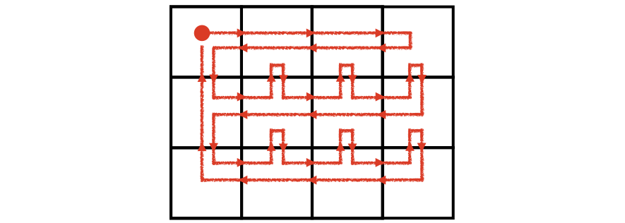

Codeforces Round #619 (Div.2)
A. Three Strings
Solution
$a_i,b_i$ 相同则 $c_i$ 必须也相同，$a_i,b_i$ 不同则 $c_i$ 必须与其中一个相同。
Code
1 |
|
B. Motarack’s Birthday
Solution
二分最小差值 $m$，check 时，对于每一个 $?$，设其旁边的数为 $x$，则 $?$ 的取值范围为 $[x-m,x+m]$，判断所有这样的区间交集是否为空。
Better Solution
可以 $O(n)$ 的…… $k$ 取 $\frac{min+max}{2}$ 就好……
Code
$O(n\lg n)$:
1 |
|
C. Ayoub’s function
Solution
直觉告诉我们，把 $1$ 尽可能均分是最优的，事实上可以严谨证明。
证：设序列为 $\underbrace{00\cdots0}{a_1个0}1\underbrace{00\cdots0}{a_2个0}1\cdots1\underbrace{00\cdots0}{a_l个0}$，且 $\sum\limits{i=1}^l a_i=n-m$. 要求的 $f(s)$ 可以看作所有区间个数减去不含 $1$ 的区间个数，即
$$
f(s)=\frac{n(n+1)}{2}-\sum\limits_{i=1}^{l}\frac{a_i(a_i+1)}{2}
$$
恒等变形：
$$
\begin{align}
f(s)&=\frac{n(n+1)}{2}-\sum\limits_{i=1}^{l}\frac{a_i(a_i+1)}{2}\&=\frac{n(n+1)}{2}-\frac{1}{2}\left(\sum\limits_{i=1}^la_i^2+\sum\limits_{i=1}^la_i\right)\&=\frac{n^2+m}{2}-\frac{1}{2}\sum\limits_{i=1}^la_i^2
\end{align}
$$
根据均值不等式，上式后一项在 $a_1=a_2=\cdots=a_l$ 时最小，$f(s)$ 最大，证毕.
Code
1 |
|
D. Time to Run
Solution
可以找到一条路径经过所有 $4nm-2n-2m$ 条边，我找的是形如下图的路径：

然后就是模拟了……
Code
【以下代码参考了 MiFaFaOvO 的代码，因为我的模拟实在是太丑了……】
1 |
|
E. Nanosoft
Solution
【参考官方题解】先用 $O(n^2)$ 的 $dp$ 得到每个方块作为红色右下角、黄色右上角、绿色左下角、蓝色左上角的最大色块边长，再用这些信息得到每个方块作为红色右下角能扩展出来的最大 $logo$ 大小。也即每个 $logo$ 都可以用红色右下角的方块的数值表示。
对于每次询问，二分答案（实际上二分的是 $logo$ 的半边长），check 时找到对应的区域（区域由可作为红色右下角的方块构成），判断区域内最大值是否大于等于二分的半边长。
区域内最大值用二维 ST 表维护。
复杂度 $O(n^2+n^2\lg^2n+q\lg n)$
Code
1 |
|
F. Super Jaber
Solution
【参考官方题解】设 $d[color][i][j]$ 为从 $i$ 行 $j$ 列的格子到一个颜色为 $color$ 的格子的最小步数，于是枚举颜色，以所有该颜色的格子为起点，bfs 求之。求答案时，枚举中间的桥梁颜色 $c$，则 ans=min(ans, d[c][r1][c1] + d[c][r2][c2] + 1)（+1 是因为在桥梁颜色之中再走一步），再和曼哈顿距离取最小即可。
Code
1 |
|
Codeforces Round #619 (Div.2)
http://xyfjason.github.io/blog-xcpc/2020/02/14/Codeforces-Round-619-Div-2/